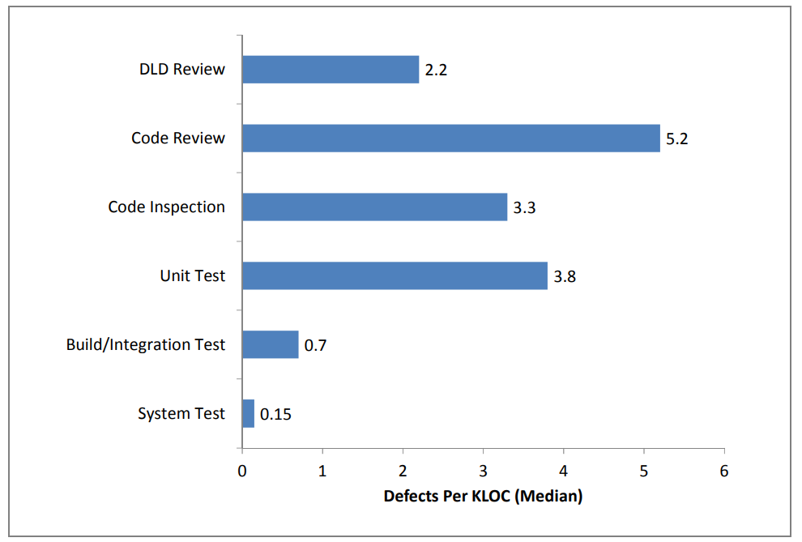
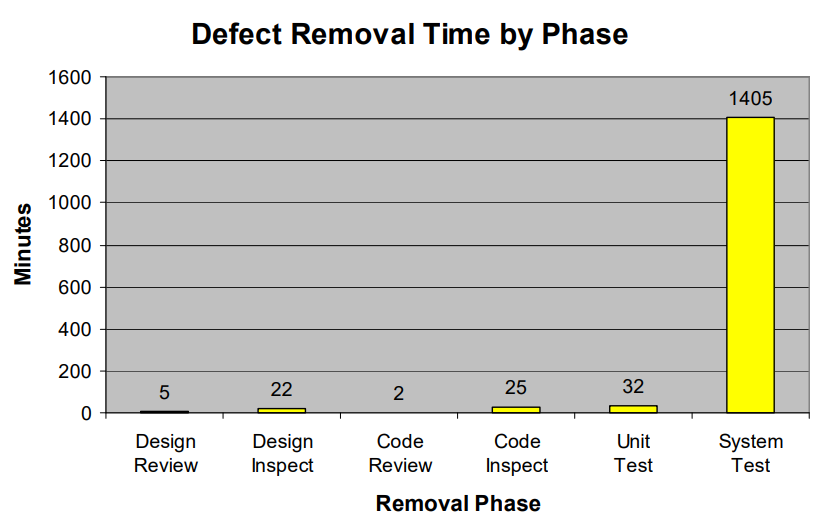
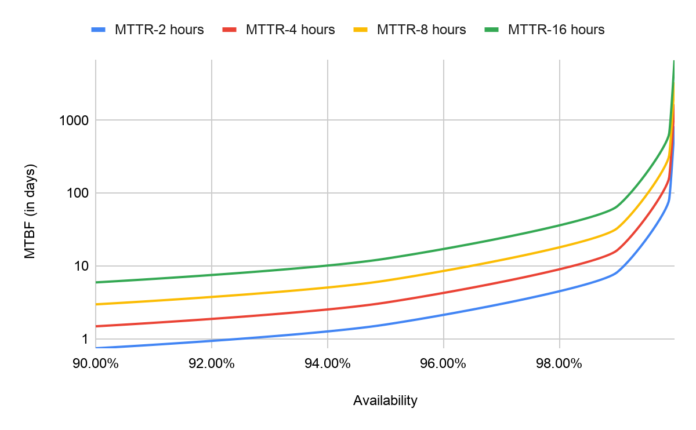
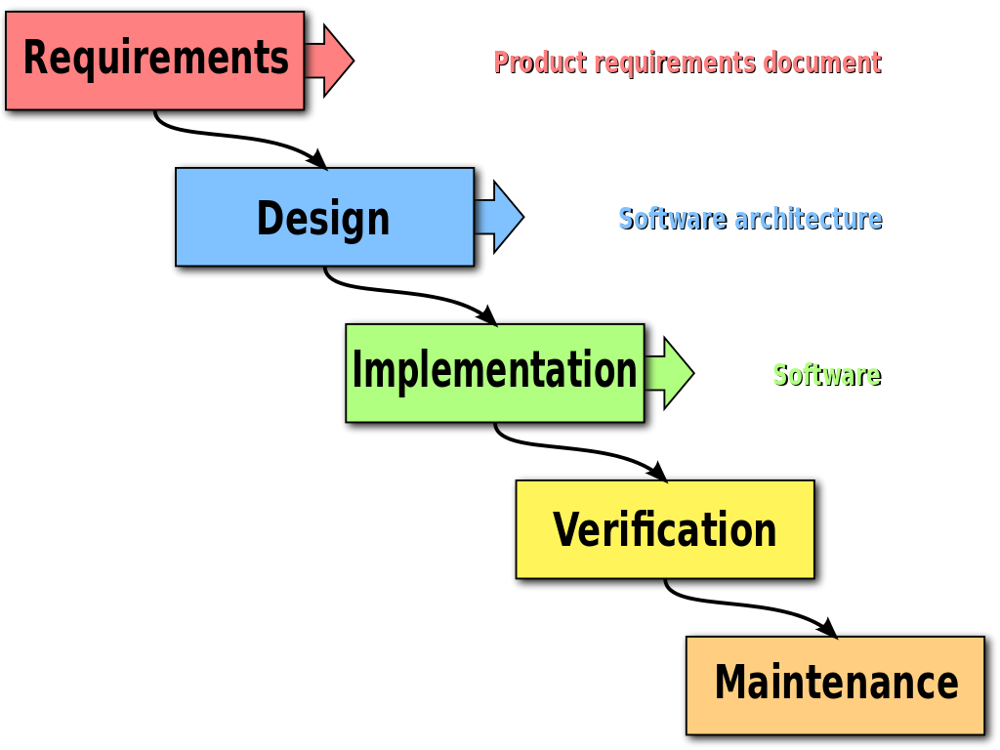

Introduction
Shipping code fast is key to delivering a successful software product. First-mover advantage is critical in many domains, and with the easy availability of cloud infrastructure, open source components, and CI/CD practices and tools, it's never been more possible to go fast.
However, increasing speed at the cost of everything else ("move fast and break things") is untenable beyond a certain point. When shortcuts are taken, tech debt accumulates, slowing development over time. Furthermore, the occasional bug or incident must be tolerable -- a non-starter in domains where availability is paramount, e.g. cloud infrastructure, or application security products.
This seems at first glance like a fundamental tradeoff, but doesn't have to be: if processes and tools evolve to support rapid development, we can maintain quality while shipping on time. The key is being extremely deliberate with our testing efforts and continuously optimizing them for efficiency.
Effective and Efficient Testing
Traditional software development models rely heavily on black box integration (or system) testing: running test cases against live instances of the application with real databases attached, usually in some sort of staging environment.
Indicators that this is the case include having dedicated "QA engineers" who spend most of their time writing tests, the use of a test case management system, or there being a special testing phase, usually occurring after development on a feature is done and before release.
This isn't a bad thing in itself, but it does reveal that testing is seen as something separate from the development process. Is this a bad thing?
The following histogram, taken from a study1 on software quality metrics, shows the distribution of bugs across 114 projects and the phase of development in which they were identified.

Of note is the low effectiveness of system testing; most bugs were detected via other means, throughout development.
Later in the paper, we see a plot of bugfix time by development phase.

It is also significantly less efficient to fix a bug past the development phase due to the overhead involved. Testing late is prohibitively expensive:
The difficulty is that a system must be tested, unexpected results logged in the bug-tracking system, the issue must be assigned, the actual source of the fault must be identified before the problem can be corrected, and finally the fix must be retested. High [bugfix] yields are only possible when there are very few defects entering late test since high defect rates would overwhelm the capacity to execute the find, fix it, and retest.
Whereas if a bug were found via a unit test, a developer could fix it in minutes and move on.
A conclusion we can draw from this is that testing has to be interleaved with development if we are to get a significant quality yield from it. Quality cannot be "tested in" at the end; it is an integral part and consequence of the development process.
This is not to say that integration testing should not be used. It can be useful as a sanity check (in the form of smoke tests), but there is little reason to use it as the primary form of testing. Unit testing is vastly more effective at finding some kinds of bugs (e.g. errors in method-level specifications), and being significantly cheaper than integration testing, it should be used whenever it suffices; at the same time, it should not be used to the exclusion of other techniques (e.g. exclusively doing TDD). This argument can be made for most of the multitude of testing techniques in use today. In fact, the more diverse our testing strategy, the more mileage we're likely to get out of it.
In this book, we cover a number of these techniques, including:
- Extensions to unit testing: property-based testing and test case generation
- Lightweight integration testing: functional testing/BDD, contract testing, regression testing
- Integration testing: tools for writing them more correctly and efficiently
- Exhaustive testing: fuzzing, proving correctness
Quality as Availability
Users experience the robustness of a system through its availability, which is typically characterized by two metrics:
- The mean time between failures (MTBF) is the average amount of a time the system is able to function correctly for. It measures how reliable the system is.
- The mean time to repair (MTTR) measures the average amount of downtime. It also serves as a proxy for how reactive the team is to failures and how efficiently they are resolved.
Availability (or uptime) is thus
$$Availability = \frac{MTBF}{MTBF + MTTR}$$
For example, if a system fails every 10 hours for 15 minutes each time on average, its availability would be $\frac{10}{10+0.25}=97.6\%$.
How does this relate to testing? Testing is only ever able to increase MTBF. No amount of testing can prevent a system from going down or shorten the amount of time it spends broken. We're reminded of Dijkstra's well-known quote:
Program testing can be used to show the presence of bugs, but never to show their absence!
This means that beyond a certain point, testing will not increase availability.

For the given MTTR values, as MTBF increases, even to the extent of years, the graphs all converge and availability stops increasing. If we want to achieve high availability, we need monitoring in addition to testing, to reduce MTTR -- ways to find or react to bugs, not just check for them.
A corollary to this is that exhaustive testing or optimizing for coverage isn't the most cost efficient use of time for availability. Given that there is very limited time for software quality in general, we have to be very careful how we spend it.
Testing + Monitoring
The approach to testing we outlined is often referred to as "Shifting Left", in reference to the waterfall diagram we know and love.

The idea is to move testing to the left, to an earlier stage in the development process.
In striving to reduce MTTR and pursue greater levels of availability, we might suggest Shifting Right as well, past the deployment phase, when we implement a monitoring strategy. This would include:
- Ways to deploy more robustly: atomic deployments, automated rollbacks
- Ways to find bugs: chaos engineering
- Ways to contain blast radius: feature flags, dark releases, canary deployments, circuit breaking
- Ways to be alerted faster: metrics, alarms
Implementing these competently makes it possible for us to have both high quality and speed.
Principles
In conclusion, here are the principles of our approach.
Complete automation over manual testing
- Deployments and infrastructure should be fully automated and transparent
- Any engineer on the team should be able to deploy
- Automated quality gates (static analysis, security scans, passing tests) should be kept relevant
- Break builds to uphold standards
- Constant reevaluation of pipeline speed and quality gate relevance
- No manual testing
- No manual gatekeeping (except for code review)
Early error detection over end-to-end testing
- Quality cannot be "tested in"
- Testing must be interleaved with development
- An ensemble of testing techniques is more effective and efficient
- All developers are involved in writing and maintaining tests
Monitoring and recovery over exhaustive testing
- Testing only increases MTBF, which cannot increase availability beyond a certain point
- Reducing MTTR via monitoring is required for high availability
- Exhaustive testing isn't a cost efficient way to increase quality
Increasing confidence in delivery over bug finding
To quote John Regehr:
The market for software, generally speaking, does not reward correct software so much as software that is acceptably correct and that can be built cheaply and rapidly. Thus, while our work on software correctness is highly unlikely to improve the quality of software, it may plausibly make it possible to create acceptable software a bit more cheaply and rapidly.
No amount of testing can show that a system is free of bugs. However, the purpose of testing in a commercial software environment is not to produce flawless software, but to increase confidence in delivery: to give us assurance that our software can not only evolve correctly, but work correctly in the hands of real users.
To that end, we employ the same methods and tools and strive towards the same ideals, but are willing to compromise rigor when that would impede delivery.